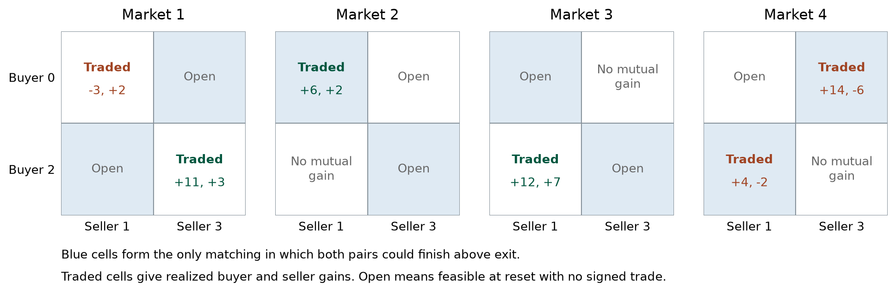
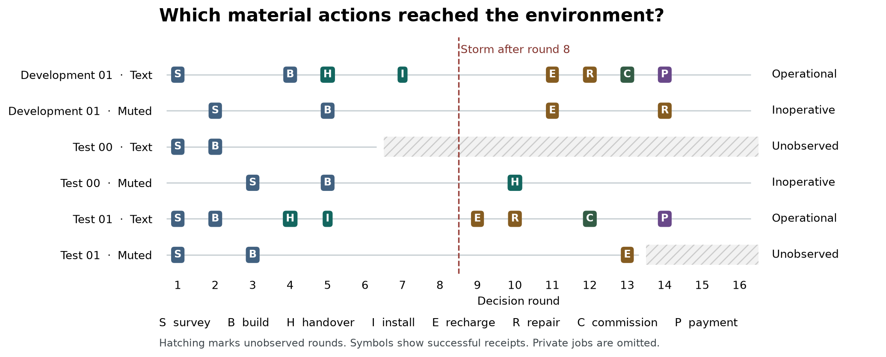

Service bargaining
Negotiate a service, deliver the work and settle payment.
100 episodes · 43 profiles
Participant outcomes
135 above · 50 equal · 15 below exit
Contract records
82 accepted · 63 fulfilled
Agents decide whom to trust, what to contribute and whether to honor a deal. Across bargaining, coalition and investment tasks, we track what they agreed to, what they carried out and who gained.
Each square is one episode. Its color shows how the participants fared against their own payoff from exiting. Select a square to inspect the outcome.
Negotiate a service, deliver the work and settle payment.
100 episodes · 43 profiles
135 above · 50 equal · 15 below exit
82 accepted · 63 fulfilled
Pool capital and complementary skills, launch the project and divide its returns.
25 episodes · 13 profiles
72 above · 26 equal · 2 below exit
28 accepted · 27 fulfilled
Invest with a partner, wait for the capital to mature and decide whether to repay.
48 episodes · 23 profiles
39 above · 22 equal · 35 below exit
98 accepted · 38 fulfilled
The 173 terminal episodes cover 79 joint private-interest profiles and 396 participant outcomes. Fifteen incomplete runs are excluded. Profiles repeat across policies; these distributions describe the recorded task mix. Several contracts can be accepted in one episode.
In eight four-person markets, Flash and a local reservation-price rule each delivered and paid for 13 services. Five of those exchanges left both Flash partners above their exit payoff. Under the rule, all 13 did.
In one Flash deal, a price of 6 left the buyer 4 points above exit and the seller 2 points below it. Replaying the same service at a price of 9 gave each partner a 1-point gain. Across the 13 paid deals, changing only the price could have made two additional deals worthwhile for both partners.
| Policy | Paid | Both gained | Below exit |
|---|---|---|---|
| Exit | 0 | 0 | 0 |
| Local rule | 13 | 13 | 0 |
| Flash | 13 | 5 | 12 |
| Central planner | 16 | 16 | 0 |
Each profile permits two mutually profitable pairings. All four seats use the assigned policy. Four Flash worlds ended naturally. For four interrupted worlds, the saved state fixes the primary endpoint. One exact individual payoff remains an interval. Each profile has one Flash draw.
In seven separate eight-agent coalition runs, teams accepted 30 agreements and fulfilled 22. An agreement could be signed before participants had assembled the resources to carry it out.
Eight controllers per run, six private-interest profiles. The 25 coalition episodes in the main display had four participants each.
Four agents could harvest stock or spend their own resources replenishing it. In five of eight runs, agents contributed maintenance without accepting a pact.
A separate cohort of eight runs on two private-interest profiles. Positive maintenance records a contribution. It can serve the contributor’s own future harvest as well as the group.
In markets 1 and 3, a buyer accepted its only actionable offer. Its deal benefited both signers and ruled out a matching that could have benefited all four participants.

In test 01, the builder and installer handed over the module, installed it, recharged, repaired the damage and activated the relay at decision 12. Neither accepted a formal agreement. Utilities were 20 and 25.

Two new pairs made four and two native trades after removal of the explicit trading reminder. Both made their first exchange at frame 9. Trading rules remained visible. The matched historical counts were one and four, so these two development draws leave the average cue effect open.

Four GPT-5.4 mini farmers shared an orchard. We exchanged starting positions within each farming role while keeping the map, trees and rewards fixed. In one matched pair, A and B traded once in the original layout. After the swap, C and D traded twice.
Across four paired seeds, all eight trades involved the two farmers who started in the tree columns. Four of the eight worlds had no trades. In the archived original, the two center farmers saw offers but held no stock to exchange. Their zero trades alone tell us little about their willingness to cooperate.
One model draw per layout and seed. Three pairs were run fresh. The fourth used an archived original. The video shows the recorded trajectories.
Two independently controlled DeepSeek Flash farmers could harvest, eat or barter. Both knew the trading rules. Their instructions omitted the explicit reminder to trade.
Replay transcript. The left panel is the evaluator’s map. The other two show each farmer’s native visual observation. Four exchanges settled at frames 9, 33, 41 and 57. By frame 96 each player had earned 16 consumption points. The video briefly holds each trade frame.
Orchard layout, seed 241801. Recorded decisions from one development run, rendered with the Melting Pot engine. All 96 replayed transitions matched the archived observation and event hashes. Engine license.
A cross-task evaluation recorded 173 episodes that reached a terminal state across 79 joint private-interest profiles: 100 service markets, 25 coalition tasks and 48 trust tasks. These yielded 396 individual outcomes. The four-person market comparison and the spatial studies use separate samples.
Native barter, spatial relay and recovery, service markets, coalitions, commons and delayed trust. Agents receive individual observations and histories, communicate voluntarily, and choose executable actions. Evaluator-only profiles establish reference opportunities.
48 base economic profiles, 24 partner-choice cases and 90 spatial candidates have fixed splits. The local release supports external controllers and replay. All 185 transitions in 30 scripted market controls verified. Independent installs reproduced all 31 archived native trades, with two worlds differing in consumption reward.
Generated profiles and completed model trials have different denominators. Semantic understanding of a partner’s private goals still awaits independent human validation.
Spontaneous cooperation, mixed motives and partner search each have close precedents. The comparison below identifies the decision record each approach makes observable.
Studies whether cooperation emerges in three competitive simulations without explicit behavioral directions, and compares the resulting patterns with human data.
The closest precedent for the motivating question. Our cue-removal study is a small existence demonstration. The stronger contribution is tracing actionable offers through native settlement and each player’s consumption. Primary paper ↗
Players pursue asymmetric secret objectives in a conquest game. Private negotiations are nonbinding. Human and model negotiations and interventions are evaluated against game outcomes.
Use this as the comparison for temporary alliances and voluntary follow-through. Our service task also reconstructs mutually profitable schedules that were available at a particular signature. Primary paper ↗
Consumer assistants search competing service agents. The authors vary search conditions and examine achieved utility, proposal bias and welfare.
The closest market comparison. In our data, a buyer sometimes has only one actionable offer. Reconstructing its alternatives separates that case from choosing the first of several offers. Primary paper ↗
Compares repetition, reputation, mediation and conditional payments across four social dilemmas. The intervention changes the institution supporting cooperation.
A mechanism comparison would answer whether an institution improves cooperation. Our proposed intervention instead changes the underlying availability of mutual gain while leaving the institution fixed. Primary paper ↗
Evaluates generalization to novel multi-agent scenarios and social partners through executable environments.
We use native Fruit Market trade and consumption as independent event and reward records. Two cue-removal trials do not establish generalization to new partner populations. Primary paper ↗
Tracks intermediate collaboration milestones and compares coordination structures and strategies across interactive tasks.
Reporting intermediate events already has precedent. Our service measurements ask whether those events implement an individually worthwhile exchange, relative to each signer’s exit. Primary paper ↗
Uses role-play scenarios with social goals and evaluates interactions with SOTOPIA-Eval, including comparisons between people and models.
Social goal achievement is a separate construct. Our current behavioral claims use executed actions and payoffs. Independent validation of semantic goal understanding remains open. Primary paper ↗
On fresh pairs of service worlds, vary only the seller’s private cost so a mutually profitable deal exists in exactly one version. Give both versions the same neutral instructions. Measure profitable fulfillment when feasible and harmful commitments when no deal can beat exit for both.
Proposed design. Repeat independent draws, randomize order within profiles, and compare decisions after agents have received informative offers.